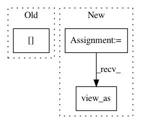

91b0d220c8e816766fd4565e1d2f5115d3afbefe,gpytorch/utils/cholesky.py,,batch_potrs,#Any#Any#,19
Before Change
potrs_list = []
for i in range(mat.size(0)):
potrs_list.append(torch.potrs(mat[i], chol[i]).unsqueeze(0))
return torch.cat(potrs_list, 0)
After Change
torch.potrs(sub_mat, sub_chol)
for sub_mat, sub_chol in zip(mat.view(-1, *mat.shape[-2:]), chol.view(-1, *chol.shape[-2:]))
]
res = torch.cat(potrs_list, 0)
return res.view_as(mat)
def tridiag_batch_potrf(trid, upper=False):
In pattern: SUPERPATTERN
Frequency: 4
Non-data size: 3
Instances
Project Name: cornellius-gp/gpytorch
Commit Name: 91b0d220c8e816766fd4565e1d2f5115d3afbefe
Time: 2018-10-12
Author: gpleiss@gmail.com
File Name: gpytorch/utils/cholesky.py
Class Name:
Method Name: batch_potrs
Project Name: rtqichen/torchdiffeq
Commit Name: 2b189592e0a169fc991bec98f39bbe8405e3440b
Time: 2020-07-27
Author: 33688385+patrick-kidger@users.noreply.github.com
File Name: torchdiffeq/_impl/solvers.py
Class Name: RKAdaptiveStepsizeODESolver
Method Name: _interp_fit
Project Name: cornellius-gp/gpytorch
Commit Name: 91b0d220c8e816766fd4565e1d2f5115d3afbefe
Time: 2018-10-12
Author: gpleiss@gmail.com
File Name: gpytorch/utils/cholesky.py
Class Name:
Method Name: batch_potrf
Project Name: mariogeiger/se3cnn
Commit Name: 6c06a88957549b1405f43361e4aa911abc56ef66
Time: 2018-10-04
Author: geiger.mario@gmail.com
File Name: se3cnn/kernel.py
Class Name: SE3Kernel
Method Name: combination